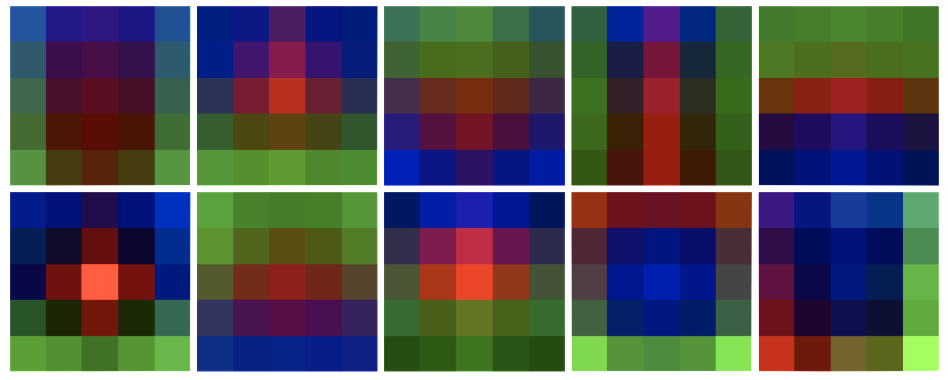
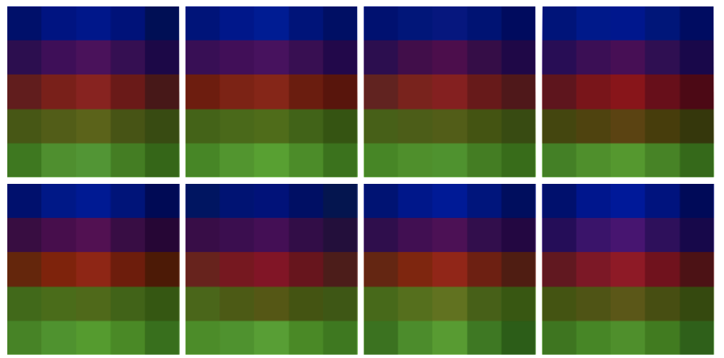

本文是 线程：电路 的一部分，该系列以实验性格式汇集了受邀的短文和批判性评论，深入探讨神经网络的内部工作机制。
曲线电路
分支特化
引言
理解神经网络的问题，有点类似于逆向工程一个大型编译后的计算机程序。在这个类比中，神经网络的权重就是编译后的汇编指令。归根结底，权重才是你真正需要理解的核心：这一系列卷积和矩阵乘法究竟是如何产生模型行为的？
理解人工神经网络也与神经科学有许多共通之处，后者试图理解生物神经网络。如你所知，现代神经科学的一项重大努力是绘制生物神经网络的 connectomes：哪些神经元与哪些神经元相连。然而，这些连接只能告诉神经科学家哪些权重非零。而获取实际的权重——知道一个连接是兴奋还是抑制，以及强度如何——将是意义重大的下一步。人们可以想象，神经科学家们愿意付出巨大代价，来获得我们研究人工神经网络时免费就能拿到的权重信息。
因此，令人惊讶的是，我们实际给予神经网络权重观察的关注却如此之少。当然，也存在一些例外。研究者常常展示视觉模型第一层权重的图像（因为它们直接连接到RGB通道，所以很容易理解为图像）。在某些工作中，尤其是早期，我们看到研究者通过手动方式来推断玩具神经网络的权重。我们也经常看到研究者讨论权重的聚合统计数据。但是，真正去查看神经网络除第一层之外的权重却相当罕见——据我们所知，将隐藏层之间的权重映射到有意义的算法，这是 circuits 项目首创的工作。
[交互图——查看原图：https://distill.pub/2020/circuits/visualizing-weights]
可视化激活、权重和归因之间有什么区别？
在本文中，我们重点讨论权重的可视化。但人们也经常可视化激活、归因、梯度以及更多内容。我们应该如何理解可视化这些不同对象各自的含义呢？
为什么研究隐藏层权重并非易事
在我们看来，有三个主要障碍阻碍了我们理解神经网络中的权重，这可能也是研究者倾向于不直接检查它们的原因：
我们用来解决这些问题的大部分方法，之前已在 可解释性的基本构建块 中针对理解激活向量进行过探讨。本文的目的是展示如何将类似的想法应用到权重而非激活上。当然，我们已经在各种电路文章中隐含地使用过这些方法，但在那几篇文章中，这些方法是次要的，服务于主要结果。专门对这些方法进行一些讨论似乎很有价值。
旁白：一个简单的技巧
可解释性方法常常因为难以使用而无法推广。因此，在深入复杂方法之前，我们想先提供一个简单、易于应用的方法。
在卷积网络中，某个神经元的输入权重形状为 [width, height, input_channels]。除非这是第一个卷积层，否则由于 input_channels 通常很大，很难直接可视化。（如果是第一层卷积，则直接可视化即可！）不过，我们可以使用降维技术将 input_channels 压缩到 3 个维度。我们发现单侧 NMF 在这方面特别有效。

这个可视化虽然无法告诉你权重在整个模型中具体做了什么，但它能显示出它们正在学习漂亮的空间结构。这可以作为一个简单的 sanity check，确认你的神经元正在学习，也是理解神经元行为的第一步。我们后面还会看到，这种对权重进行分解的通用方法可以进一步扩展成研究神经元的强大工具。
尽管缺乏情境化，单侧 NMF 仍然是一种很好的一目了然地调查多个通道的技术。使用这个方法你可能会很快发现：在卷积层末尾使用了全局平均池化的模型中，最后几层的权重会全部呈现为水平条带。

我们将这种现象称为 权重带状结构。单侧 NMF 可以快速测试和验证关于 weight banding 等现象的假设。
使用特征可视化来为权重提供情境
当然，在真空中观察权重并没有太大意思。为了真正理解发生了什么，我们需要将权重置于网络的更广泛情境之中。情境化是理解神经网络时反复出现的挑战：我们能轻松观察到每一个激活、每一个权重和每一个梯度，难点在于确定这些数值到底代表什么。
回想一下，两个卷积层之间的权重是一个四维数组，形状为：
[相对 x 位置，相对 y 位置，输入通道，输出通道]
如果我们固定输入通道和输出通道，就能得到一个可以用传统数据可视化方式呈现的二维数组。假设我们已经知道自己想理解哪个神经元，因此确定了输出通道。我们可以挑选那些对输出通道权重幅度较大的输入通道。
但输入代表什么？输出又代表什么？
关键技巧在于，特征可视化（或对神经元的更深入研究）可以帮助我们理解输入和输出神经元所代表的含义，从而为图表提供情境。特征可视化特别有吸引力，因为它是自动的，并且能生成一张通常极具信息量的图像。因此，我们在权重图中常常用特征可视化图像来代表神经元。
[交互图：3：为权重提供情境。——查看原图：https://distill.pub/2020/circuits/visualizing-weights]
这种方法与在 可解释性的基本构建块 中使用特征可视化为激活向量提供情境（见“理解隐藏层”一节）是权重层面的对应做法。
这就好比在逆向工程普通编译后的计算机程序时，需要开始为寄存器中存储的值赋予变量名以便跟踪。特征可视化本质上就是为神经元提供的自动变量名，而神经元大致类似于那些寄存器或变量。
小 multiples（小图矩阵）
当然，神经元有多个输入，同时展示多个输入的权重有时会很有帮助，可以做成 small multiple：
[交互图：4：mixed3b342 的小 multiples 权重。——查看原图：https://distill.pub/2020/circuits/visualizing-weights]
如果我们有两个相关的神经元家族在相互交互，有时甚至可以把它们之间的所有权重都展示为一个小 multiples 网格：
[交互图：5：多种曲线检测器的 small multiple 权重。——查看原图：https://distill.pub/2020/circuits/visualizing-weights]
使用特征可视化进行情境化的进阶方法
虽然我们最常使用特征可视化来可视化单个神经元，但其实可以对任意方向（神经元的线性组合）进行可视化。这为权重可视化打开了一个非常广阔的空间，下面我们将探讨其中几个特别有用的方法。
可视化空间位置权重
回想一下，单个神经元的权重形状为 [width, height, input_channels]。上一节我们将 input_channels 分割开来，分别可视化每个 [width, height] 矩阵。但另一种方法是，认为在每个空间位置上都存在一个关于输入神经元的向量，然后对这些向量分别应用特征可视化。你可以将其理解为：它告诉我们该位置的权重整体在寻找什么。
这个可视化是权重版本的 可解释性的基本构建块（来自 Building Blocks）。它是一种高信息密度的方式，能很好地概览单个神经元的权重在做什么。然而，它无法捕捉某个位置对多个非常不同的事物做出响应的情况，比如多面性或多义性神经元。
可视化权重因子
特征可视化也可以应用于权重的因子分解，这一点我们在前面曾简要讨论过。这是 Building Blocks 中“神经元组”可视化在权重上的对应版本。
当你有一组神经元（例如 高低频探测器 或黑白 vs 彩色检测器），它们基本上都在寻找少量因子时，这种方法特别有用。例如，大量的高-低频检测器可以被很好地理解为只是以不同模式组合了两个因子——一个高频因子和一个低频因子。
这些因子随后可以被进一步分解为单个神经元，以便进行更细致的理解。

处理间接交互
正如我们之前提到的，有意义权重交互有时发生在神经网络中并非字面相邻的神经元之间，或者权重并未直接体现在单个权重张量中。以下是一些例子：
因此，我们经常使用“展开权重”——即相邻权重矩阵相乘的结果，可能忽略非线性。我们通常通过对模型求梯度来实现展开权重，忽略或将所有非线性操作替换为最接近的线性操作。
这些展开权重具有以下性质：
它们还有一个额外好处，这更多是实现层面的细节：因为它们是通过梯度实现的，你不需要知道权重在模型中是如何表示的。例如，在 TensorFlow 中，你不需要知道哪个变量对象代表权重。当你在处理不熟悉的模型时，这会带来极大的便利！
展开权重的优势
像这样将权重相乘有时能帮助我们看到更简单的底层结构。例如，mixed3b208 是一个黑白中心检测器。它是通过将一堆黑白 vs 彩色检测器组合而成的。
[交互图：9. mixed3b208 及其来自 mixed3a 的五个权重贡献最强的神经元。——查看原图：https://distill.pub/2020/circuits/visualizing-weights]
将权重展开后，我们可以看到这些连接的一个重要聚合效应：它们共同在更靠前一层寻找中心区域缺乏颜色的特征。
[交互图：10. 从 conv2d2 到 mixed3b208 的前 18 个展开权重，按权重因子分解组织成两行。——查看原图：https://distill.pub/2020/circuits/visualizing-weights]
这种方法一个特别重要的用途——我们在前面的例子中已隐含使用——是跳过“瓶颈层”。瓶颈层是将通道数大幅压缩的网络层，通常出现在分支中，从而使大空间卷积的计算成本更低。InceptionV1 的 瓶颈层 就是一个例子。由于大量信息被压缩，这些层往往是多义性的，因此跳过它们、直接理解与更前面宽层之间的连接通常更有帮助。
展开权重可能产生误导的情况
当然，当非线性结构很重要时，展开权重可能会产生误导。一个很好的例子是 InceptionV1早期视觉概览。回想一下，边界检测器通常同时检测从低到高和从高到低的频率跃变：
[交互图：11. 像 mixed3b345 这样的边界检测器同时检测低到高和高到低的频率跃变。——查看原图：https://distill.pub/2020/circuits/visualizing-weights]
由于高-低频检测器通常被一边的高频模式兴奋而另一边抑制（低频则相反），同时检测两个方向会导致展开权重相互抵消！因此，展开权重似乎显示边界检测器既不被两层前的低频检测器兴奋也不被抑制，而实际上它们既被高频兴奋也受其抑制，只是取决于具体情境，而这两种不同情况相互抵消了。高低频探测器
[交互图：12. 两层前的神经元（例如 conv2d289）可能对贡献于 mixed3b345 的高-低频检测器有强烈影响（上图），但当我们直接查看 conv2d289 和 mixed3b345 之间的展开权重时，这种影响被抵消了（下图）。——查看原图：https://distill.pub/2020/circuits/visualizing-weights]
描述多层交互的更复杂技术可以帮助我们理解这类情况。例如，我们可以确定两个神经元之间“最佳情况”的兴奋交互（即它们之间可达到的最大梯度）。或者查看特定样本的梯度。又或者对多个样本的梯度进行因子分解，以确定主要可能的情况。这些都是有用的技术，但我们将把它们留到未来的文章中讨论。
定性特性
在结束对展开权重的讨论之前，有一个跨越多层的展开权重的定性特性值得一提。展开权重常常呈现出类似“电子轨道”般的平滑空间结构：
[交互图：13. 从 mixed3b268 到 conv2d1 的部分展开权重的平滑空间结构。 虽然具体结构可能随神经元而异，但这个例子并非刻意挑选：这种平滑性是大多数多层展开权重的典型特征。——查看原图：https://distill.pub/2020/circuits/visualizing-weights]
目前尚不清楚如何解释这一现象，但它暗示了在多层尺度上存在丰富的空间结构。
维度与规模
到目前为止，我们已经解决了情境化和间接交互的挑战。但对于第三个挑战——维度与规模——我们只给予了很少的关注。神经网络包含许多神经元，每个神经元又连接到许多其他神经元，产生了海量的权重。我们如何挑选哪些神经元之间的连接来观察呢？
在本文中，我们将“想研究哪些神经元”的问题放在讨论范围之外，只讨论挑选要研究哪些连接的问题。（我们可能试图全面研究一个模型，这时就需要研究所有神经元。但我们也可能只想研究那些与模型行为某个较窄方面相关的神经元。）
通常，我们选择观察幅度最大的权重，就像我们在情境化那一节开头所做的那样。不幸的是，小权重通常存在长尾分布，在某一点之后观察它们会变得不切实际。这些小权重中究竟隐藏了多少重要信息？我们不知道，但多义性神经元表明这里可能隐藏着非常重要且微妙的故事！稀疏神经网络有可能通过消除小权重来显著改善这种情况，但是否能将此类结论推广到非稀疏网络，目前仍是推测性的。
我们曾多次提及的另一种策略是将权重降维为少数组分，然后研究这些因子（例如使用 NMF）。通常，极少数的组分就能解释大部分方差。事实上，有时少量因子就能解释一整组神经元的权重！突出的例子包括高-低频检测器（我们在前面已经看到）和黑白 vs 彩色检测器。
然而，这种方法也有缺点。首先，这些组分可能更难理解，甚至可能是多义性的。例如，如果对边界检测器应用这个方法的基本版本，其中一个组分会同时包含高到低和低到高的频率检测器，这会使分析变得困难。其次，你的因子不再与激活函数对齐，这会让分析变得更加混乱。最后，因为你将在一个不同的基底下对每个神经元进行推理，所以除非你把组分转换回神经元，否则很难构建关于模型的整体图像。
本文是 线程：电路 的一部分，该系列以实验性格式汇集了受邀的短文和批判性评论，深入探讨神经网络的内部工作机制。
曲线电路
分支特化